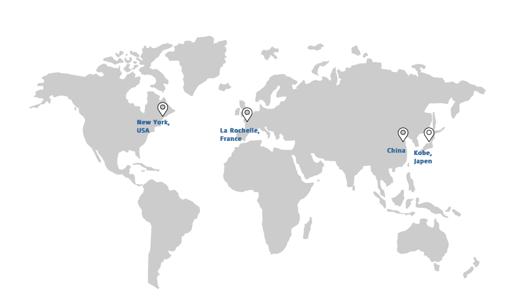

Company Profile
Longrich UK and Ireland is a leading Biosciences Company which leverages on proprietary technology to develop a wide variety of excellent innovative products including healthcare, oral care, body &hair care, feminine care, cosmetics and household products. We have 8 advanced Research and Development centres across three continents and over 20,000 employees worldwide. Founded in 1986, our company specialises in using the power of nature through advanced technologies to develop specially formulated breakthrough products designed to preserve and promote health. Our trademarks have been registered in over 183 countries and our products are being sold by direct selling in more than 50 countries and regions around the world.Vision and Statement
Vision
To be World's Best Health and Beauty Solution Provider
Mission
Committed to a Healthy and Beautiful Lifestyle
Value
Diligence, Continual Improvement, Perseverance, Collaboration, Passion, Change
Research and Development
LONGRICH USA HEALTH AND COSMETICS
- Established: March 2007
- Location: Long Island, New York USA
- Principal: Wang Tianxiang
Longrich USA Health & Cosmetics Research Institute was set up in New York in 2007. It is the first advanced cosmetic research institute to implement a comprehensive study of biological and physiological properties of Asian skin by adopting the most advanced technology and formula in the world. The chief researcher at the institute is Dr. Wang Tianxiang, a former Global R&D director of new technology for a well-known international cosmetic brand and director of the Chinese American Cosmetics Association.
LONGRICH FRENCH R&D CENTER
- Established: November 2012
- Location: La Rochelle, France
- Principal: Ms. Valery
Longrich French Research Development Center was established in western France, in november 2012. It is located in the city named La Rochelle. The main activity of the center is to develop products from organic and natural raw elements including food supplements and cosmetics.
LONGRICH JAPAN BEAUTY AND HEALTH INNOVATION CENTER
- Established: April 2009
- Location: Kobe, Japan
- Chief Scientists: Yang, Jianzhong
Dr.Yang Jiang, a former chief scientist of a large organization that develops hair care products serves now as general manager and chief scientist in the center. He is recognized as an expert of hairdressing field in the international daily chemical industry. The research group member includes Dr.Shi Zhiqian, Dr Masahiro Takahashi, and Dr. Koji Takada all with depth experience in products innovation and development.
TSINGHUA UNIVERSITY LONGRICH BIOLOGY INSTITUTE
- Established: November 2005
Longrich has established together with Tsinghua University an institute named Tsinghua University Longrich Institute of Biotechnology in november 2005. The institute is mainly engages in the research and development of Chinese herbal medicines. It has applied already for 13 national patents and 1 USA patent of which 8 patents have been granted and 6 papers published. Longrich and Tsinghua University also jointly received accreditations for the development of the national 863 project (National High Technology Research and Development Program.)
JIANGNAN UNIVERSITY LONGRICH JOINT RESEARCH CENTER
- For Functional Foods
- Established: August 2010
Established on August 8th, 2010, Jiangnan University Longrich Joint Research Center is devoted to the study of relevance of food to health. The center develops new high-quality nutritious foods with focus on fundamental research in the technological application of food science, new generation of raw foods and anti-ageing products.
LONGRICH POSTDOCTORAL RESEARCH LABORATORY
- Established: 2007
Longrich Post-Doctor Research Laboratory was officially established by the State Ministry of Personnel of China in 2007. Candidates willing to apply for this research station are required to hold high-level scientific research experience, must be college or university student with strong scientific, economic and technical influence from a state-owned large enterprise and must be authorized by the expert panel organized by the Ministry of Personnel through a preliminary review. Researchers at Longrich Post-doctor Research Laboratory are all subjects to excellent scientific achievements in recognition of the public social support expressed through excellent R&D technologies and cutting-edge research.
LONGRICH BIOLOGICAL TECHNOLOGY RESEARCH CENTER & POSTDOCTORAL RESEARCH CENTER
- Established: 1998
Longrich Post-Doctoral Research Station was founded in 1998, it is mainly responsible for the development and the transformation of new technologies and new materials toward care beauty and health products. The R&D includes 6 project research groups: skin care, makeup, cosmetics, household care, health care products and technology. Currently it also undertakes the research and development of the national 863 (National High Technology Research and Development Program) technology projects.
LONGRICH ACADEMICIAN LABORATORY
- Established: September 2010
In september 2010, the department of science and technology of Jiangsu Province authorized the creation of a workstation for corporate academicians. The establishment of this centre has provided a strong support for the company’s development of new green techniques and technologies for producing high-end products. The workstation has become a major platform that enables academicians develop their skills and innovate on new categories of products.